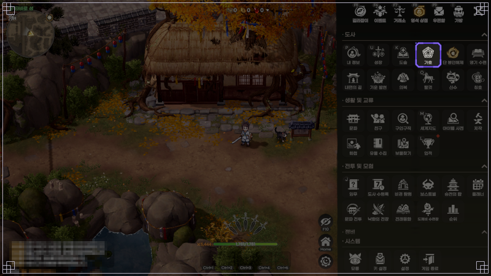
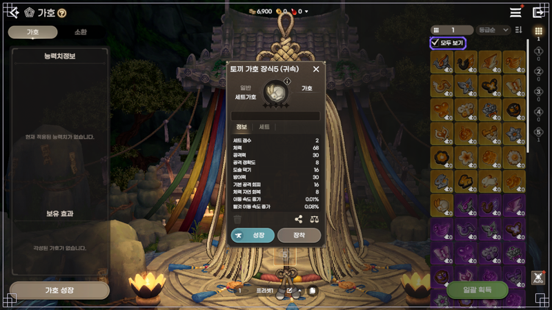
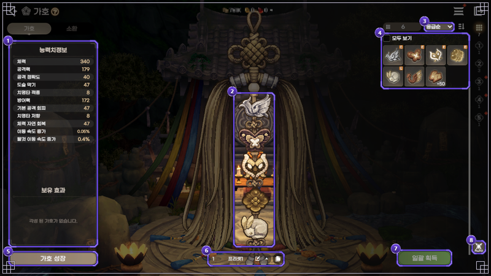
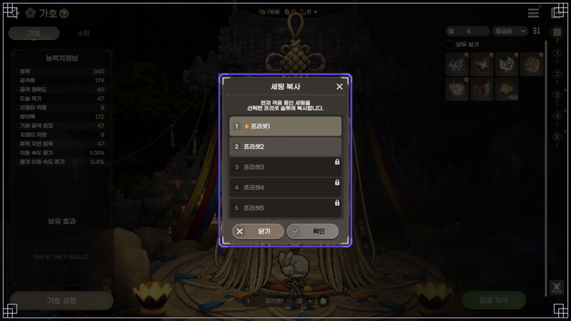
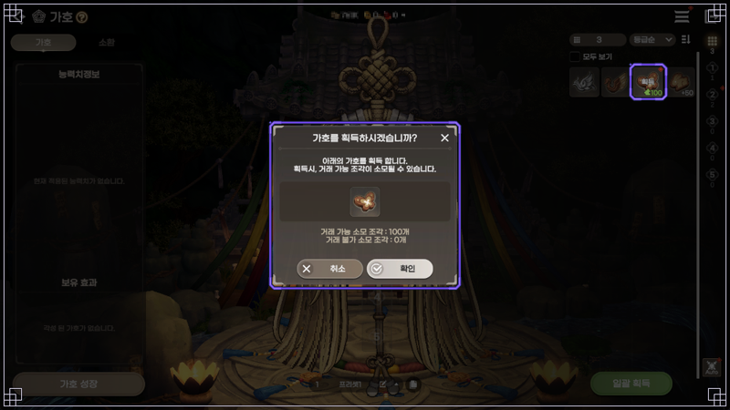
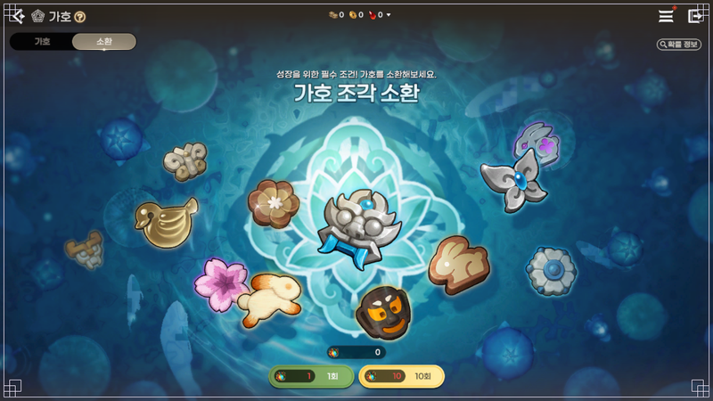

도깨비의세계 가호 세트 효과 정리, 토끼 연꽃 도깨비 나비 봉황 등급별 수치와 세트 점수 10·30·50·70
가호 세트 점수 10·30·50·70이 대체 뭘 센 숫자인지, 문양마다 효과가 어떻게 다른지 궁금해서 공식 TIP을 펼쳐 보신 분들 많으시죠. 저도 표는 있는데 점수가 어디서 오는지는 한 줄도 없어서 한참 들여다봤어요. 이 글은 공식 TIP 2026년 10월 7일(수) 업데이트 기준이고 10월 11일에 확인했어요. 업데이트에 따라 달라질 수 있어요.
- 문양은 5종이고, 문양마다 올라가는 항목이 하나씩 정해져 있어요
- 등급은 일반·희귀·영웅·전설 4단계이고 표의 세트 점수는 10·30·50·70이에요
- 점수가 어떻게 합쳐지는지는 공식이 적지 않았어요
가호 화면은 메인 화면 ▶ 메뉴 ▶ 가호 아이콘으로 들어가요.

메인 화면 메뉴의 '도사' 묶음에 가호 아이콘이 있어요
출처: 도깨비의세계 공식 포럼 게임 가이드 7837(가호)
도깨비의세계 가호 문양 5종, 세트 효과 항목은 문양마다 뭐가 다른가요?
TIP 표 기준으로 가호 세트 효과는 문양마다 올라가는 항목이 하나로 정해져 있고, 등급이 오르면 그 항목의 수치만 커져요.
- 토끼 가호 장식 · 도술 피해 감소
- 연꽃 가호 장식 · 관통률
- 도깨비 가호 장식 · 피해 감소
- 나비 가호 장식 · 치명타 피해 증가
- 봉황 가호 장식 · 피해 증가
이름이 비슷해 보여도 따로 노는 항목이에요. 도깨비 가호는 '도깨비 피해 감소'가 아니라 그냥 '피해 감소'이고, 토끼 가호의 '도술 피해 감소'와는 이름부터 달라요. 두 항목이 어떤 공격에 얼마나 먹히는지는 TIP에는 적혀 있지 않아요.
도깨비의세계 가호 세트 효과 수치, 등급별로 한 장에 보면 어떻게 되나요?
공식 TIP 표가 적은 세트 효과는 5종 문양 × 4등급 20칸이 전부예요.
| 문양 · 세트 효과 항목 | 일반 · 점수 10 | 희귀 · 점수 30 | 영웅 · 점수 50 | 전설 · 점수 70 |
|---|---|---|---|---|
| 토끼 · 도술 피해 감소 | 0.95% | 1.24% | 1.53% | 1.79% |
| 연꽃 · 관통률 | 1.8% | 2.35% | 2.84% | 3.28% |
| 도깨비 · 피해 감소 | 0.86% | 1.13% | 1.39% | 1.63% |
| 나비 · 치명타 피해 증가 | 3.19% | 4.37% | 5.66% | 7.09% |
| 봉황 · 피해 증가 | 0.86% | 1.15% | 1.45% | 1.76% |
문양끼리는 올라가는 스탯 자체가 달라서 3.19%와 0.86%를 놓고 어느 쪽이 낫다고 말할 수 있는 표가 아니에요. 비교는 같은 줄 안에서만 해 주세요.
도깨비의세계 가호 등급이 오르면 세트 효과는 얼마나 더 늘어나나요?
일반에서 전설까지 올리면 세트 효과는 문양에 따라 약 1.8배에서 2.2배까지 커져요.
아래는 위 표의 값을 빼고 나눠 본 거예요. 공식 수치가 아니라 제가 계산한 값이고, 증분은 상위 등급 값에서 하위 등급 값을 뺀 %p, 배율은 전설÷일반이에요.
| 문양 · 항목 | 일반→희귀 | 희귀→영웅 | 영웅→전설 | 전설÷일반 |
|---|---|---|---|---|
| 토끼 · 도술 피해 감소 | +0.29%p | +0.29%p | +0.26%p | 1.88배 |
| 연꽃 · 관통률 | +0.55%p | +0.49%p | +0.44%p | 1.82배 |
| 도깨비 · 피해 감소 | +0.27%p | +0.26%p | +0.24%p | 1.90배 |
| 나비 · 치명타 피해 증가 | +1.18%p | +1.29%p | +1.43%p | 2.22배 |
| 봉황 · 피해 증가 | +0.29%p | +0.30%p | +0.31%p | 2.05배 |
나비와 봉황은 등급을 한 칸 올릴수록 늘어나는 폭이 점점 커지고, 토끼는 마지막 구간에서만, 연꽃·도깨비는 구간마다 폭이 줄어들어요. 나비는 영웅→전설 구간(+1.43%p)이 제일 큰 점프네요.
도깨비의세계 가호 세트 점수 10·30·50·70은 어디서 나오는 숫자인가요?
세트 점수 10·30·50·70은 공식 표에서 등급마다 하나씩 붙은 숫자이고, 장식 한 개의 점수와의 관계는 화면과 산수로 읽을 수 있어요.

토끼 가호 장식5 정보 창이에요, 능력치 맨 윗줄에 '세트 점수 2'가 보여요
출처: 도깨비의세계 공식 포럼 TIP 8081(가호 세트 효과)
| 구분 | 내용 |
|---|---|
| 공식이 적은 것 | 가호는 보유 효과가 있고, 세트로 착용하면 '가호 세트 점수'를 통해 더 강력한 효과를 얻는다고 해요. 표에는 일반 10 · 희귀 30 · 영웅 50 · 전설 70이 적혀 있어요. |
| 화면과 산수로 읽은 것 | 일반 등급 장식 한 개의 정보 창에 세트 점수 2가 찍혀 있어요. 2점 × 5칸 = 10이라 표의 일반 10점과 맞아떨어져요. 다만 공식이 '합산'이라고 적은 문장은 없어서 읽기일 뿐이에요. |
| 아직 모르는 것 | 희귀 이상 장식 한 개의 점수 · 문양이나 등급이 섞일 때의 계산 · 10과 30 사이 같은 중간 값의 처리 · 효과가 켜지는 최소 칸 수 · '보유 효과'의 정확한 뜻. 봉황 값은 둘이에요. 가이드 7837의 테스트 환경 화면(20:15 게시)에는 봉황 세트 탭이 '일반 요귀 피해 증가' 10·30·50·70점에 1.75·3.5·7·14%로 찍혀 있어 TIP 표(21:03 게시)의 0.86~1.76%와 달라요. 어느 쪽이 지금 값인지 공식 문서로는 확인되지 않았고, 이 글은 더 늦게 올라온 TIP 값을 썼어요. |
팬 데이터베이스 깨비지지 기준(2026-10-11 조회)으로는 장식 한 개 점수가 일반 2·희귀 6·영웅 10·전설 14로 적혀 있어요(깨비지지 가호 조합). 공식 화면에서 확인되는 건 일반 2뿐이라 나머지는 참고 값이에요.
제가 표의 점수를 5로 나눠 보면 같은 2·6·10·14가 나와요.
도깨비의세계 가호 세트는 꼭 같은 문양 5개로 맞춰야 하나요?
공식 가이드는 꼭 같은 문양으로 5개를 장착할 필요는 없다고 적었어요.
같은 문양을 세트로 장착하면 세트 효과를 얻는다는 문장 바로 아래에 붙은 유의 사항이에요. 공식은 같은 문양 5개가 아니어도 된다는 데까지만 적었고, 섞었을 때 표의 어느 칸이 적용되는지는 적지 않았어요.
세트 탭은 가호 ▶ '모두 보기' 체크 ▶ 원하는 가호 클릭 ▶ 정보에서 볼 수 있고, 화면에 따라 항목 표기가 TIP 표와 다르게 보일 수 있어요.
장식 번호가 곧 슬롯 번호라서 봉황 가호 1은 1번 슬롯에 들어가요. 가호 화면에서 눈여겨볼 자리는 이래요.

가호 화면의 번호 ①~⑧ 자리예요, 가운데 세로 5칸이 장착 슬롯이에요
출처: 도깨비의세계 공식 포럼 게임 가이드 7837(가호)
- ① 현재 장착 능력치와 보유 효과
- ② 장착한 가호의 모습
- ③ 등급순·획득순 정렬
- ④ 획득·미획득 목록
- ⑤ 가호 성장으로 가는 버튼
- ⑥ 프리셋 복사
- ⑦ 일괄 획득
- ⑧ 자동 장착
세트를 바꿔 껴 보고 싶을 땐 ⑥ 프리셋에 지금 세팅을 복사해 두면 편해요.

세팅 복사 팝업이에요, 프리셋 3~5번에 잠금 아이콘이 붙어 있어요
출처: 도깨비의세계 공식 포럼 게임 가이드 7837(가호)
도깨비의세계 가호는 어떻게 얻고, 전설은 얼마나 잘 나오나요?
가호는 가호 조각 100개를 모으면 얻고, 조각은 상점·거래소·각종 콘텐츠와 가호 소환에서 모아요. 소환에서 전설은 0.1050%(거래 불가 0.1000 + 거래 가능 0.0050, 표의 조각 수 100)예요.

획득 팝업에 '거래 가능 소모 조각 : 100개'가 떠요
출처: 도깨비의세계 공식 포럼 게임 가이드 7837(가호)
획득할 때 거래 가능 조각이 소모될 수 있다고 공식이 적어 뒀어요.
소환에는 가호 주머니가 필요하고, 확률은 등급별로 거래 불가와 거래 가능이 따로 적혀 있어요. 공식 확률표는 2026년 10월 8일(목) 기준이고, 합산 칸은 제가 더한 값이에요.

소환 화면 오른쪽 위에 '확률 정보' 버튼이 있고 아래에 1회·10회 버튼이 있어요
출처: 도깨비의세계 공식 포럼 게임 가이드 7837(가호)
| 등급 | 조각 수 | 거래 불가 | 거래 가능 | 합산(제가 계산한 값) |
|---|---|---|---|---|
| 전설 | 100 | 0.1000% | 0.0050% | 0.1050% |
| 영웅 | 50~100 | 1.0000% | 0.0500% | 1.0500% |
| 희귀 | 20~70 | 25.0000% | 0.5000% | 25.5000% |
| 일반 | 1~50 | 72.3450% | 1.0000% | 73.3450% |
조각 수 칸은 1회 소환에서 나오는 조각 수 범위로 보여요.
자주 묻는 질문
Q. 도깨비의세계 가호 프리셋은 몇 개까지 쓸 수 있나요?
5개예요. 처음엔 1·2번을 쓰고, 3·4·5번은 영기 수련 11-4 · 17-3 · 19-1을 각각 끝내야 열려요.
Q. 도깨비의세계 가호 주머니는 어디서 얻나요?
도사 수행록 누적 점수 보상, 금전 상점, 각종 콘텐츠에서 얻어요. 라이브 방송 감사 쿠폰 보상에도 가호 주머니가 들어 있어요(공지 12167).
Q. 도깨비의세계 가호 조각이 중복으로 나오면 어디에 쓰나요?
각성에 써요. 각성은 가호당 총 5번이고 할 때마다 능력치가 오르며, 각성한 가호 아이콘에는 ✦가 붙어요(최대 5개). 자세한 재료는 성장 가이드 7739에 있어요.
Q. 도깨비의세계 가호 강화는 어디까지 되나요?
+50까지 올릴 수 있어요. 재료는 가호와 같은 등급의 '가호의 정수'이고, 9→10처럼 10레벨마다 개방 단계를 거쳐요. 가호 조각은 강화되지 않고 장식만 강화돼요. 돌파는 +50을 마친 뒤에 하고, 실패해도 단계는 내려가지 않고 재료만 차감돼요(성장 가이드 7739).
Q. 도깨비의세계 가호 임무 중에 화면이 깨지거나 꺼지는 건 알려진 문제인가요?
공지 10859의 알려진 문제에 '가호 획득 및 장착 임무 진행 중 화면 변형·비정상 종료'(10월 8일)가 올라와 있어요(10월 10일 18:45 최신화).
도깨비의세계 가호 세트, 이렇게 보고 올려 보세요
점수 규칙은 내 정보 창의 세트 탭을 보면서 하나씩 올려 보며 판단하는 순서가 안전해요. 같은 문양 일반 장식부터 채워 보시는 걸 추천드려요~
✔ 도깨비의세계 같이 보기 좋은 내용
· 도깨비의세계 라이브 방송 감사 쿠폰 3종, 도깨비의다짐·약속·마음 보상과 사용 기한 정리
· 도깨비의세계 필드보스 시간 요일별 일정표, 신기 쟁탈전 미혹의 정원 문파전 시간까지 한 장으로
· 도깨비의세계 보물상자 위치 정리, 지역 19곳 상자 91개 미니맵 번호 핀과 상자별 보상
참고한 곳
· 도깨비의세계 공식 포럼 — 가호 세트 효과 TIP
· 도깨비의세계 공식 포럼 — 가호 게임 가이드
· 도깨비의세계 공식 포럼 — 가호 소환 확률 정보
· 도깨비의세계 공식 포럼 — 가호 성장 가이드
· 도깨비의세계 공식 포럼 — 공지(알려진 문제)